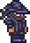

Armadura de obsidiana
La armadura de obsidiana es una armadura del modo normal creada con obsidiana, seda y escama de las sombras o muestra de tejido en una forja infernal. En versiones anteriores solamente necesita obsidiana y seda en un telar.
Más información
